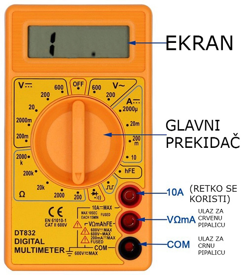
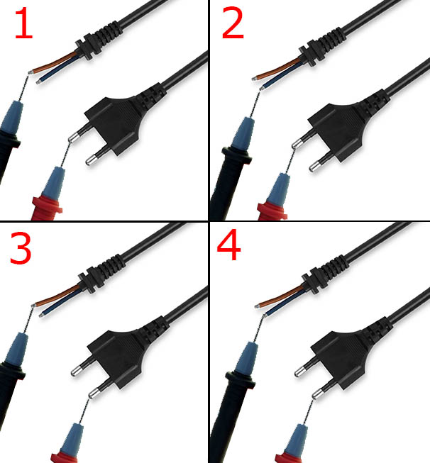

Mikser najčešće ima motor, prenosni mehanizam koji služi da rotaciju jednog motora prenese na najčešće dve lopatice za mešanje, prekidač za regulaciju brzine i kabl. Upravo je kabl deo koji najčešće strada, zbog pogrešnog načina odlaganja uređaja, kada se kabl namotava na takav način da se 'lomi' na delu gde ulazi u mikser. To je ujedno i najlakši i najjeftiniji deo za zamenu.Popravka miksera se najčešće ne isplati, jer majstori ne mogu dovoljno da naplate vreme potrebno za popravku. Ovo je sjajna vest, jer to omogućava da se sami oprobate u majstorluku, umesto da bacite uređaj.Svaka popravka počinje dijagnostikom. Najčešći uređaj koji se koristi u elektrotehnici u ove svrhe je univerzalni merni instrument, koji se još naziva i 'unimer'. Jeftine kineske unimere možete nabaviti po ceni od 300-500din, rade na baterije i ako ih koristite pravilno, mogu da traju godinama.Ako merni instrument podesite na merenje otpora, možete proveriti da li je kabl u prekidu. Na slici je prikazano kako da okrenete glavni prekidač da bi instrument merio otpor.

Odabrali smo minimalni mogući opseg za merenje otpora, što je u slučaju instrumenta na slici 200 oma. Merni instrument ima dve 'pipalice', crnu i crvenu. Ako se metalni vrhovi pipalica međusobno ne dodiruju, instrument će pokazati vrednost 1.
Ispitivanje kabla
Da bismo ispitali kabl, izvešćemo 4 merenja. U prvom merenju (slika 1), crna pipalica je na braon žici kabla, crvena je na prvom kontaktu viljuške. U drugom merenju (slika 2), crna pipalica treba da dodiruje plavu žicu, a crvena ostaje na prvom kontaktu viljuške. Ako je sve u redu, jedno merenje bi trebalo da ima vrednost 1, a drugo merenje će imati neku proizvoljnu vrednost. Ako je kabl u prekidu, oba merenja će imati vrednost 1. Po istoj logici se rade i 3. i 4. merenje, s tim što se crvena pipalica sa prvog kontakta viljuške, prebacuje na drugi kontakt viljuške. Opet važi isto pravilo, ako je kabl u prekidu, oba merenja će imati vrednost 1. Treba zameniti kabl ako bilo koji par merenja ima obe vrednosti 1.
